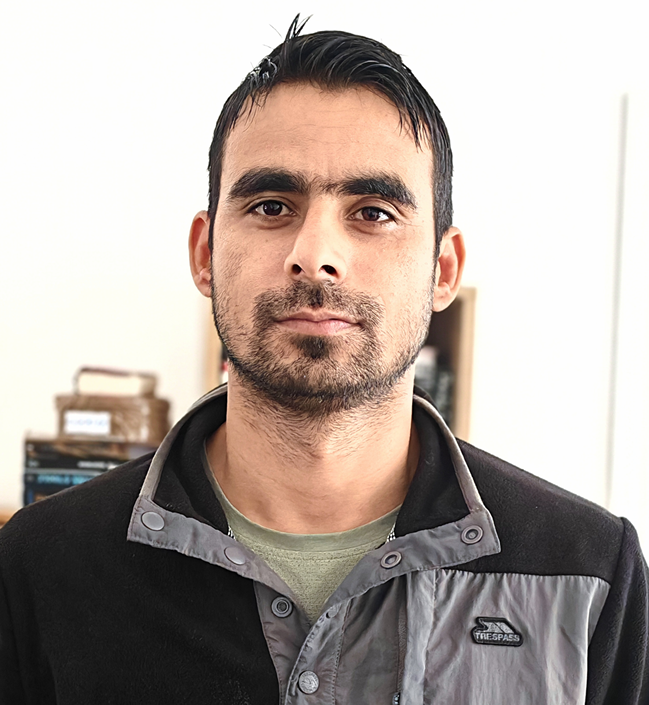

Manzoor Malik
I am currently an Assistant Professor (Health Economics) at Durham University. Prior to this, I worked as a Research Associate in Health Economics within the Health Economics and Equity (HEEL) Group at the University of Liverpool.

RESEARCH
Research interests
My research focuses on economic evaluation, population health, health inequalities, linked administrative data, and the evaluation of household socio-economic support interventions.
Read more about my research →